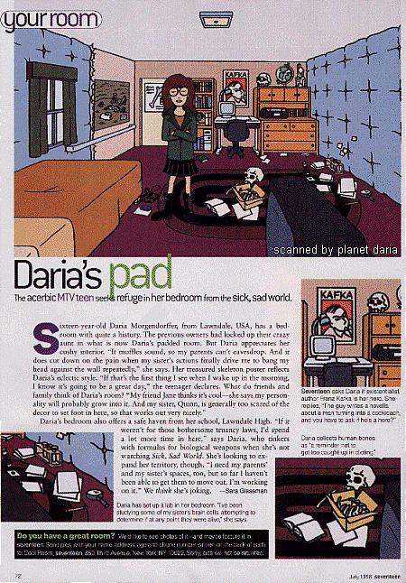

|

Captions under pictures (clockwise from upper right):
- Seventeen asks Daria if existentialist author Franz Kafka is her hero. She replies, "The guy writes a novella about a man turning into a cockroach, and you have to ask if he's a hero?"
- Daria collects human bones as "a reminder not to get too caught up in dieting."
- Daria has set up a lab in her bedroom. "I've been studying some of my sister's brain cells, attempting to determine if at any point they were alive," she says.
|